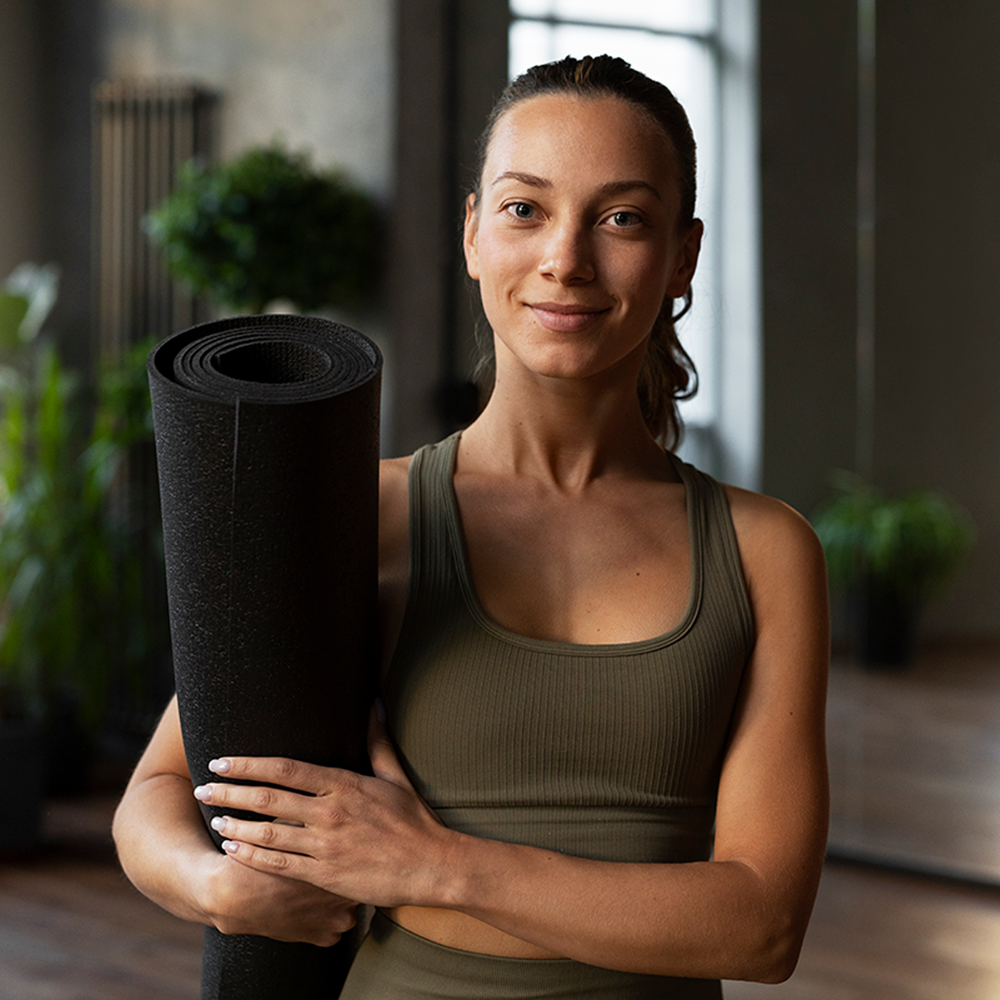

About Our Studio
Meet your instructors

Maya Chen
Maya leads Gentle Beginnings and Restorative Reset. Her teaching uses clear instructions and patient pacing to help new students feel comfortable asking questions.
Jordan Ellis
Jordan leads Vinyasa Flow and private sessions. Their approach offers choices for different energy levels and encourages students to explore movement without comparison.
Accessibility and accommodations
Our studio offers step-free entry, space for mobility aids, chairs, blocks, blankets, and bolsters. Instructors provide spoken explanations and demonstrations.
You may remain seated, take a break, or decline a pose. Tell us about access needs so we can plan your visit together.
Studio policies
- Arrive 10 minutes early for your first visit.
- Silence phones and respect each student's personal space.
- Hands-on adjustments require your permission each time.
- Cancel at least 12 hours before class to retain your credit.
- Bring a mat or ask to borrow one; clean shared props after use.